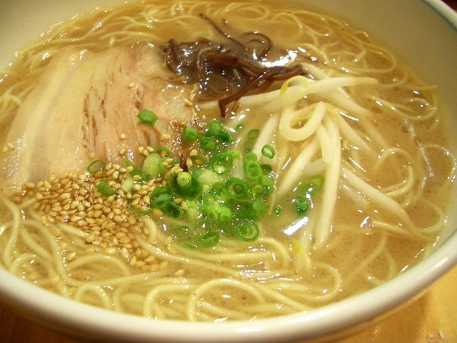

| Tonkotsu Ramen |
Tonkotsu Ramen (豚骨ラーメン) is a ramen dish that originated in Fukuoka, Fukuoka Prefecture on the Kyushu island of Japan, and it is a specialty dish in both Fukuoka and Kyushu. The soup broth is based on pork bones and other ingredients, which are typically boiled for several hours, and the dish is traditionally topped with sliced pork belly and served with ramen noodles that are hard in the center. In Fukuoka, Japan, tonkotsu ramen is referred to as Hakata ramen. wikipedia.org/wiki/Tonkotsu_ramen *Original recipe as displayed on this webpage can be found at the link
below: norecipes.com/tonkotsu-ramen-recipe |
 |
|---|---|---|
| Ingredients: Tonkotsu Base |
• 2 - pig trotters (cut in half lengthwise) • 1.5 pounds - pork leg bone (cut into several pieces) • 1.5 pounds - chicken bones • 2 inch knob - fresh ginger (sliced thin) • 1 small head - garlic (trimmed but whole) • 1 large - onion (sliced thinly) • 1 teaspoon - white peppercorns |
|
| Ingredients: Mayu (black garlic oil) |
• 1/4 cup - toasted sesame oil • 5 cloves - garlic grated |
|
| Ingredients: For Soup |
• 3 cups - Tonkotsu base (from recipe above) • 1 tablespoon - tahini • 1 tablespoon - strained braising liquid from chashu • 2 cloves - garlic finely grated (not pressed) • 1-2 teaspoons - kosher salt (to taste) • 1 teaspoon - mirin • 1/8th teaspoon - ground white pepper • 1 tablespoon - toasted sesame seeds coarsely ground • 2 tablespoons - fatback finely minced (salted pork fat) |
|
| Ingredients: To Serve |
• 1/2 half batch - fresh ramen noodles • 2 teaspoons - sliced chashu • 2 - scallions finely chopped |
|
|
Step #1 - Fill a pressure cooker 2/3rds of the way with water and bring to a boil. Add the pig trotters to the boiling water and cook until you stop seeing red blood come out of the bones (about 10-15 minutes). The idea is to draw out as much of the gunk as possible into this first batch of water. Transfer the trotters to a bowl of cold water then repeat with the leg bones and chicken bones (you can use the same water). Step #2 - Dump the now very dirty water down the drain and wash the pot. Scrub any dark brown scrum off all the bones and rinse them thoroughly. Return the cleaned bones to the pot and cover with water (the water should come up an inch above the top of the bones). Bring the pot to a boil and skim off any chunks or foam that floats to the surface. Keep doing this until you don't seen any more foam or scum floating up. This will take about 30 minutes. Step #3 - While the bones are going, Heat 1/2" of oil in a pot over medium heat and add the head of garlic and ginger. Fry this until they are browned and shriveled up. Use a slotted or wire mesh to transfer the ginger and garlic to a bowl. Add the onions to the oil and fry these until caramelized and shriveled. Add the fried onions to the ginger and garlic and set aside. Step #4 - Once the stock is scum-free, add the caramelized ginger, garlic, and onions, along with the white pepper to the stock. Affix the pressure cooker lid and cook on high pressure for 1 hour and 45 minutes. If you don't have a pressure cooker, cover with a lid and cook at a boil for 5-6 hours (you may need to check and add water periodically, the bones should be mostly covered in water). Step #5 - Once the pressure is released use tongs to remove and discard all the bones. Remove any chunks of pork and set aside for another use. Strain the stock into a bowl and skim off any excess fat. Step #1 - To make the black garlic oil, add the sesame oil into a small saucepan along with the grated garlic. Put the pan over medium low heat and let the garlic cook stirring occasionally until it is very dark brown. When the garlic is very dark, turn the heat down to low and let it cook until it is black. Step #2 - As soon as it hits black, turn off the heat and transfer the hot oil and garlic to a heatproof bowl. Let this mixture cool down completely. Add the cooled oil to a blender or food processor and blitz until there are no visible garlic particles left and the oil is uniformly black. Step #3 - It will taste burnt and slightly bitter, but this is okay as you only add a little bit to each bowl. Put it the oil in a container and refrigerate until you are ready to use it. Step #1 - Heat the tonkotsu base in a sauce pan. In a bowl whisk together the tahini, chashu liquid, grated garlic, salt, mirin and white pepper. Add this to the hot broth and whisk to combine. Taste and adjust salt as needed. Bring to a simmer, then add the sesame seeds and pork fat and whisk to combine. Step #2 - Split the cooked noodles between two bowls. Pour the tonkotsu soup over the noodles. Top with chashu, scallions and whatever else you want to add. Finish the ramen with a drizzle of mayu on each bowl. |
||